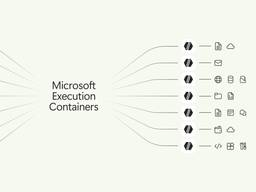
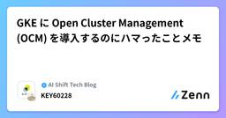
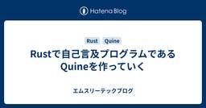

設計・SRE・基盤直近7日・スコア順
このトピックだけを購読する: RSS

SQLite 本体にベクトル検索拡張 vec1 がやってきた 55
55 zenn.dev（はてな IT人気）
zenn.dev（はてな IT人気）
はてブ55
設計・SRE・基盤
はじめに 2026 年 9 月 30 日、SQLite のソースツリーに ext/vec1/ というディレクトリが追加されました。コミットしたのは FTS5 などでおなじみの Dan Kennedy 氏。コミットメッセージはたった 1 行です。 これまで別の場所で開発されていた vec1 が、まるっと SQLite 本体のリポジトリに取り込まれました。本体は vec1...
6時間前
Unikernels were hard. key word: were
HN 68pt
ghuntley.com（Hacker News）
設計・SRE・基盤
Justin Cormack, who worked on MirageOS back in the day, called me at the pub to talk about why unikernels are coming back. The friction that made them hard is gone, the operating system is design debt, and if you care about security you should seriously consider them.
9時間前

これには驚いた！ 今度はExcelやWordやPower Pointをオープンソースで再構築、Win、Mac、Linux、Web対応で無料 248 コリス
コリス
はてブ248 · 新しく出た
設計・SRE・基盤 / フロントエンド・デザイン
今週はCrafting Appsの記事ばかりになっています。 Photoshopを再構築したオープンソース版「PhotoCraft」の日本語対応など、Adobeのアプリ7種類を毎日のようにアップデート
2日前

IDCFクラウド障害、顧客データ「取り出し・復元困難」 復元は顧客側のバックアップ頼み 31
はてブ31
itmedia.co.jp（ITmedia NEWS）
設計・SRE・基盤
「データを復元できるのは顧客自身が保持しているバックアップデータからのみ」としている。
1日前

無料のオープンソースEPUB・PDFリーダー「Readest」、Windows・Linux・macOS・Android・iOS・ブラウザ・KOReaderでハイライト・メモ・分割画面読書・AIテキスト読み上げ・AI自動翻訳・クラウド同期が可能 5 GIGAZINE
はてブ5 · 新しく出た
AI・LLM / 設計・SRE・基盤 / フロントエンド・デザイン
電子書籍のハイライトやメモだけでなく、2冊を横並びにする分割画面読書・AI音声読み上げ・文章や書籍全体の翻訳・端末間のクラウド同期まで利用でき、Windows・Linux・macOS・Android・iOS・ブラウザに対応する「Readest」が公開されています。
14時間前

IDCFクラウド障害、親会社のソフトバンクが顧客窓口に 調査・復旧も支援 10
はてブ10
itmedia.co.jp（ITmedia NEWS）
設計・SRE・基盤
フトバンクとの緊密な連携の下、（1）顧客へのバックアップ手順の案内と移行環境の提案、（2）顧客の要望に従って、顧客の仮想サーバの起動や停止などの作業の代行――を行っているという。
1日前

「Microsoft Execution Containers」が一般提供、AIエージェントを安全に動かす基盤／Windows/macOS/Linuxで「Rust」「.NET」「Node.js」対応のSDKを提供 37窓の杜
はてブ37 · 動かしてみた
AI・LLM / 設計・SRE・基盤
米Microsoftは10月7日（現地時間）、「Microsoft Execution Containers」の一般提供を発表した。6月に開催された「Build 2026」で発表、早期プレビューとしてテスト提供されていたが、今後は正式版として利用できる。
3日前
ソフトウェアサプライチェーン攻撃演習から学ぶ、インシデント対応に必要な5つの視点 2
LayerX エンジニアブログ
設計・SRE・基盤 · セキュリティ
設計・SRE・基盤 / セキュリティ
こんにちは、LayerX Fintech事業部から三井物産デジタル・アセットマネジメント（以下、MDM）に出向しているs.masです。 皆さん、AI を活用されていますか。非常に便利な反面、昨今は AI によってセキュリティの前提も変化してきていると認識しています。 たとえば 2026年5月には、npm で広く使われているライブラリ群の正規バージョンが改ざんされ、インストールしただけで開発者の認証情報が盗まれるワーム型の攻撃が公開されました。 この検体は、盗んだ認証情報で別のパッケージを次々と再公開して広がるだけでなく、Claude Code や VS Code の設定ファイルに自分自身を書き…
2日前

テスト設計工数を約50%削減——QA業務効率化システム「DAAQ」を支える技術の裏側 1 Blog on DeNA Engineering
仕組みを掘る · 数字のインパクト
設計・SRE・基盤 / 組織・マネジメント・QA
はじめに こんにちは。IT本部AI・データ戦略統括部所属の黄です。 DeNAのIT本部では、QA業務の効率化を目指して「DAAQ（DeNA AI Advanced Quality）」というシステムの開発・運用を進めています。本記事では、DAAQの中でも中心的な取り組みであるテスト設計支援領域の全社展開までの歩みと、それを支えるシステムアーキテクチャを紹介します。 後半では、現 …
3日前

geohash について知ったので、パン屋巡りに使えないか考えてみた 1 エムスリーテックブログ
エムスリーテックブログ
設計・SRE・基盤 · 組織・マネジメント・QA
設計・SRE・基盤 / 組織・マネジメント・QA
※ 記事とは何の関係もない、夏の旅行で撮った馬の写真 メディカルマーケティングオートメーションチームの山本（@hiro_o918）です。 本記事はメディカルマーケティングオートメーションチーム(Unit2)のブログリレー2日目の記事です。 前回は中村さんの「Rustで自己言及プログラムであるQuineを作っていく」でした。 最近、場所をハッシュ値で持つ geohash という概念を学びました。休日にたまにパン屋巡りをするのですが、これを応用すれば効率的にパン屋を巡れるんじゃないかと思いついたので、考えたことを書いていこうと思います。 ただ、人間の胃には限界があるため、実際にこのとおり巡るのは難…
2日前

歴史から紐解く、開発から9年が経過したサーバーレスサービスの「変化への追従」 1 ZOZO TECH BLOG
ZOZO TECH BLOG
AI・LLM · 設計・SRE・基盤 · 組織・マネジメント・QA
AI・LLM / 設計・SRE・基盤 / 組織・マネジメント・QA
はじめに こんにちは、ZOZOMO部FBZブロックの杉田です。普段はFulfillment by ZOZO（以下、FBZ）が提供するAPIシステムを開発・運用しています。昨年からは、社内における開発者向けAI支援ツールの推進を担う専門チームも兼務しています。 FBZ APIは2017年にServerless Frameworkで構築を開始し、現在はAWS Lambda（以下、Lambda）の関数500本超、40個以上のスタックで稼働しています。サーバーレス自体の運用負荷は低い一方、9年間でツールの有償化やプラグインの保守停止、ランタイムのEOL、リソース上限といった「周辺環境の変化」への追従を…
2日前

GKE に Open Cluster Management (OCM) を導入するのにハマったことメモ CyberAgent Developers Blog | サイバーエージェント デベロッパーズブログ
設計・SRE・基盤
設計・SRE・基盤
今回は後者のセッションでも言及されている、Open Cluster Management (OCM) ...
2日前

Rustで自己言及プログラムであるQuineを作っていく
エムスリーテックブログ
設計・SRE・基盤
設計・SRE・基盤
はじめに エムスリー株式会社 メディカルマーケティングオートメーションチームの中村（@inakam00）です。 本記事はメディカルマーケティングオートメーションチーム(unit2)のブログリレー1日目の記事です。 エムスリーテックブログではお馴染みとなりつつあるQuineを、今回はRustで作ってみました。 はじめに Quineについて RustでM3 Quineを作る 完成品 コードを3つのパートに分ける 空白の代わりにコメントを使う マスク情報も英字にしてコードに溶け込ませる raw文字列と文字エスケープ raw文字列の終端記号 置換処理の重複防止 空白文字の保持 おわりに 編集後記 We…
2日前

VPNだけじゃない — さくらのクラウドVPNルータで作る境界ネットワーク
設計・SRE・基盤
さくらのナレッジ設計・SRE・基盤
はじめに クラウド環境では、「どこまで公開するか」「どこで通信を止めるか」というネットワーク設計により、障害時の影響範囲やセキュリティリスクが大きく変わります。可用性と信頼性を確保するため、役割に応じてネットワーク領域を […]
3日前

CoCo CLI Hackathon 2026 体験記 — Snowflake CoCoによるネットワーク運用レポート自動生成
4 NTT docomo Business Engineers' Blog
はてブ4
設計・SRE・基盤
Snowflake主催の[CoCo CLI Hackathon 2026](https://hack2skill.com/event/cococlihack/)(APJ: アジア太平洋・日本地域)にチームcocomoとして参加し、Winner(優勝)を受賞しました。 この記事では、約2ヶ月間のハッカソンを通じて何を考え、どう判断し、何を学んだかを体験記として紹介します。
5日前

GitHub ActionsとAIによる月次分析 ── Google Playストアレビューの考察レポートを自動生成 2
ZOZO TECH BLOG
AI・LLM · 設計・SRE・基盤
AI・LLM / 設計・SRE・基盤
はじめに こんにちは、グローバルプロダクト開発本部ZOZOFIT USブロックの平川です。普段はZOZOFITの身体計測に関するデータを分析しています。 ZOZOFITは、スマートフォンで身体を3D計測し、体型の変化を記録・管理できるボディマネジメントアプリです。アメリカを中心に海外へ展開しています。 今回ZOZOFIT開発チームでは、Google PlayストアのレビューをAIで分析し、リリース情報も加味した考察レポートを自動生成する仕組みを構築しました。本記事では、この仕組みの設計と運用について紹介します。
5日前